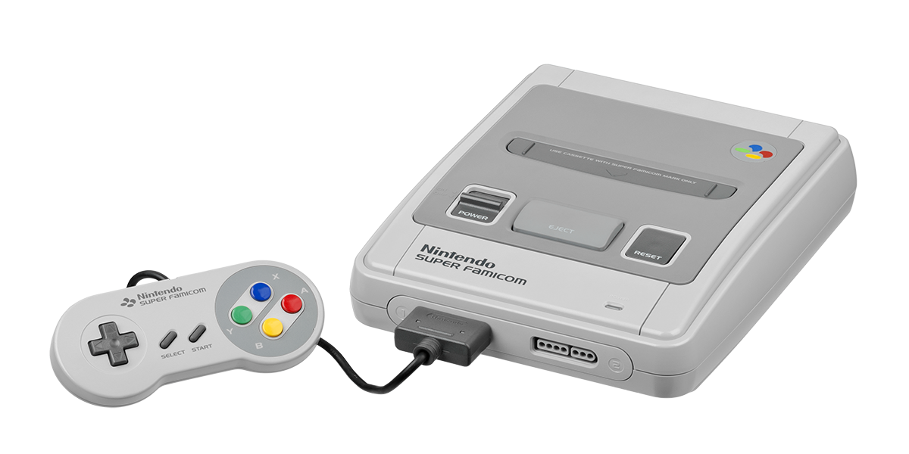
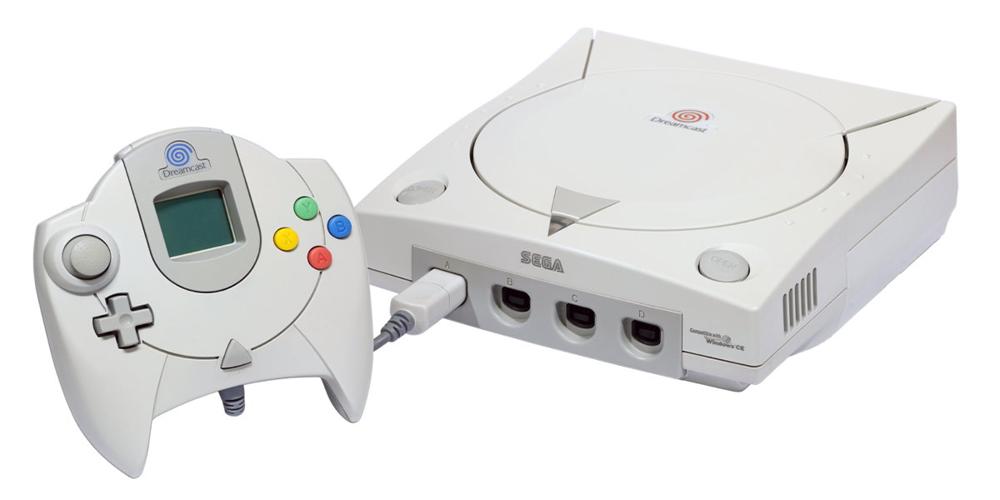

經典遊戲機
那些在90年代前後到千禧年後的遊戲機

任天堂紅白機
1983年7月15日推出的8位元遊戲主機，Famicom的名稱源自Family Computer（意為家庭電腦）的縮寫，因為其機殼採用紅白配色而通稱為紅白機，是不少骨灰級玩家共同的美好回憶。紅白機出現對電子遊戲產生了十分深遠的影響，讓美國電子遊戲界從1983年的崩潰中恢復過來，也奠定了任天堂在當今遊戲界的地位。其後續機種為1990年推出的超級任天堂。
超級任天堂
「超級任天堂（スーパーファミコン）」於1990年於日本發售，北美版「Super Nintendo Entertainment System （簡稱SNES）」則在1991年推出。超任在當時是硬體最為出色的 16 位元主機，不但色彩、音效出色，手把也首度使用「ABXY」與「LR」組合，奠定現代手把的基礎，再加上《FF》《DQ》《超級瑪利歐》等強作加持，讓超任成為當代最受歡迎的家用遊戲主機！


任天堂64
最大的創新之處在於首次在手把上加入了類比搖杆和震動功能。任天堂64上誕生了《薩爾達傳說 時之笛》和《超級瑪利歐64》等大作。N64在歐美是一台十分受歡迎的遊戲主機，也是目前三十歲上下的美國人普遍的童年回憶。
任天堂GameCube
任天堂GameCube是第一款使用CD作為其主要存儲介質的任天堂遊戲機。該主機因其優秀的控制器、廣泛的軟體庫和高品質的遊戲而受到稱讚，但因其外觀設計和較少的功能而受到批評。GameCube於2007年停產時，共在全球售出2174萬台。其後繼機型Wii於2006年11月發布，Wii向後相容大多數GameCube軟體。


PC Engine(PCE)
PC Engine曾在日本極度流行，在推出後不久的銷售中，曾在銷量上打敗任天堂的FC遊戲機。它能夠在不同的解析度之下同時發出512種顏色，並有著非常健全的圖像鑲嵌處理能力。PC Engine也是世界第一部可選配CD模組的家用遊戲機。直至1999年，PC Engine仍有新遊戲推出。
MEGA DRIVE
SEGA 於1988年推出Sega Mega Drive，香港人稱之為「世嘉五代」，揭開了家用主機16-bit戰爭的帷幕。MD貫徹SEGA的作風，效能比2年後推出的超級任天堂更強，為了能順利移植街機作品，MD採用了街機的常用CPU。眾多膾炙人口的作品均於此時推出，包括《戰斧》、《雙截龍》、《Streets of Rage 2》、《忍 Shinobi》、《太閣立志傳》，MD的出現風魔了無數機迷，1991年登場的《音速小子》為SEGA成功豎立的吉祥物。


SEGA 土星
SEGA Saturn是老牌遊戲廠商SEGA旗下首款以CD為標準儲存媒體的電視遊樂器主機，配合其第6代的位置而以太陽系第6行星「土星」命名。在3DO率先於1993年底開啟了高效能 3D 繪圖與大容量CD的 “次世代主機” 時代後，於隔年 11 月在日本首賣，比Sony初試啼聲的「PlayStation」早了11天。曾發行包括《VR 快打》、《Daytona USA》、《飛龍騎士》、《櫻花大戰》、《冒險奇譚》等眾多膾炙人口的經典遊戲。
SEGA DREAMCAST
SEGA於家用主機最後的波紋，名稱是結合「Dream（夢）」與「Boardcast（廣播）」而成的造語，搭配逗趣的螺旋狀商標，彰顯其「散播夢想」的形象。因效能無法與PS2競爭，同時期的PS2使用先進的DVD技術，加上遊戲陣容無法與PS2抗衡，僅在兩到三年即停產，雖在DC上也推出了《莎木1+2》、《櫻花大戰1-4》、《冒險奇譚2》、《夢幻之星》、《音速小子大冒險1+2》、《生死格鬥》、《劍魂》、《快打旋風3》、《惡靈古堡 聖女密碼》等經典大作，但仍無法與PS2競爭。


PS1
PlayStation是第一個「電腦娛樂系統」，官方縮寫為「PS」，通常被稱為「PS1」或其代號「PSX」。一台機器有三種功能，既能玩遊戲，也能播放音樂CD，部分機型還能播放影音CD。機器出貨量為1億部，共發售了9年6個月。2000年7月，一款名為PS one的「超薄」版本發布，取代了最初的灰色版本主機，並重新以適當的名字命名，以避免與它的繼任者PlayStation 2混淆。